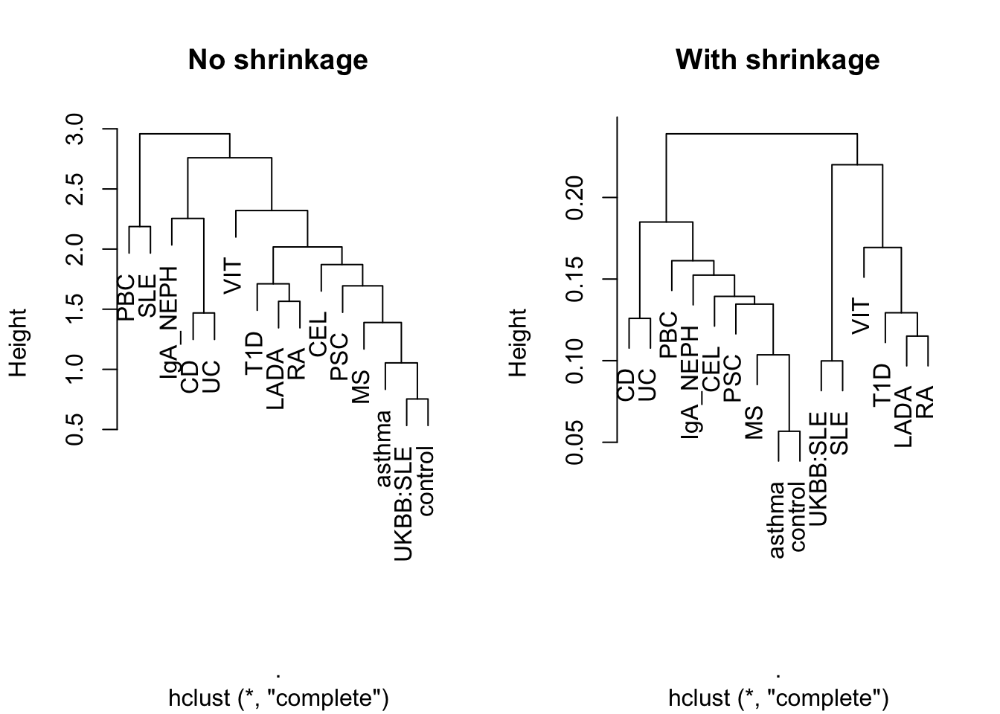

Creating a basis using cupcake
Olly Burren
2020-01-09
create-basis.RmdIntroduction
The function of this package is to facillitate the building of a set of ordered basis vectors from a collection of case/control genome-wide association study summary (GWAS) \(\beta\), or \(\log(\text{Odds Ratio})\) statistsics. The building of ordered sets of basis vectors for analysing GWAS genotype data is not new and it’s utility in adjusting for confounding due to population structure is well described. This package seeks to address a different set of questions as to the overall relationship between a set of related (or unrelated) traits for which genotype data may not be available. This follows a logical workflow as follows:-
- Identify a set of traits of interest from which to construct the basis and collect relevant summary statistics.
- Idenification of the maximal set of SNPs that are included in all source traits.
- Odds ratio (OR) alignment, such that the effect allele for all the traits is standardised.
- Basis construction.
- Projecting new traits onto the basis.
This package is concerned with steps 4 and 5, and whilst the other steps are non-trivial this package assumes access to a set (\(n\gt1\)) of OR aligned summary statistics (see section on file formats below as to what is required).
Installing cupcake
You will need to have the devtool R package installed after which the latest version of the package can be installed as follows
library(devtools)
install_github("ollyburren/cupcake",build_vignettes = FALSE)Constructing a basis
Setup
Here we load cupcake and other useful packages and define the locations of various data files that we will need to construct a basis.
library(cupcake)
#> Loading required package: data.table
library(magrittr)
SPARSE_BASIS_EXTDATA <- '../inst/extdata/sparse_imd_basis'
SNP_MANIFEST_FILE <- file.path(SPARSE_BASIS_EXTDATA,'support/sparse_snp_manifest.RDS')
TRAIT_MANIFEST_FILE <- file.path(SPARSE_BASIS_EXTDATA,'support/sparse_trait_manifest.tab')
SHRINKAGE_FILE <- file.path(SPARSE_BASIS_EXTDATA,'support/13_trait_sparse_shrinkage.RDS')
BASIS_FILE <- file.path(SPARSE_BASIS_EXTDATA,'support/13_trait_sparse_basis.RDS')
GWAS_DATA_DIR <- file.path(SPARSE_BASIS_EXTDATA,'/gwas_data/')
NOSHRINK_BASIS_FILE <- file.path(SPARSE_BASIS_EXTDATA,'support/13_trait_sparse_basis_noshrink.RDS')During this vignette we will create a `sparse’ basis relevant to immune mediated diseases (IMD). This sparse basis incorporates data about a small subset of SNPs (\(n<500\)) that is sufficient to capture the relationships between the input traits with over 99% accuracy as compared to a full basis where \(n \approx 300,000\). We have found such a sparse basis to be sufficient for most analyses.
If you wish to create your own basis for a set of related traits you should be able to follow this vignette, please note that you will need to define your own set of input files as detailed below.
Input files
The package expects two manifest files, one describing the SNPs to include in the basis and the other describing the traits . The package makes the choice to define a pid or primary identifier for each SNP, that is a portmanteau of it’s chromomsome and position. For example, given a reference genome assembly of GRCh37, rs2476601 which has a position on chromosome 1 of 114,377,568 has a pid of 1:114377568. Whilst variants with the same position but differing alleles may exist, the fidelity of any genotyping calls of such a class of variants means that, for practical reasons, they are best removed before basis construction.
SNP Manifest
Each row of this file (see ../inst/extdata/sparse_imd_basis/support/sparse_snp_manifest.RDS) describes a non redundant (see above) set of SNPs to include in the basis. Note that for de novo basis creation this should represent the maximal number of SNPs for which data is available across all basis studies.
| pid | ref_a1 | ref_a2 | ref_a1.af | ld.block |
|---|---|---|---|---|
| 1:2513216 | C | T | 0.514546 | 4 |
| 1:2526746 | A | G | 0.642687 | 4 |
| 1:2709164 | C | A | 0.666887 | 4 |
| 1:4698559 | C | T | 0.839196 | 10 |
| 1:8180210 | G | A | 0.808120 | 17 |
- pid - See above.
- ref_a1 - Allele 1 (A/G/C/T/I/D).
- ref_a2 - Allele 2 (A/G/C/T/I/D) - the effect allele.
- ref_a1.af - The allele frequency of ref_a1 (estimated from a suitable reference population).
- ld.block - A number grouping a block of SNPs in high LD (see note).
The ld.block column assigns each SNP to an approximately LD independent block. We have derived ours from HapMap recombination data and these are available in ../inst/extdata/sparse_imd_basis/hapmap.ld.tab.
Trait Manifest
Each row of this file describes a trait (see ../inst/extdata/sparse_imd_basis/support/sparse_trait_manifest.tab) toinclude in basis creation.
| trait | disease | cases | controls | pmid | file |
|---|---|---|---|---|---|
| VIT | vitiligo_jin | 4680 | 39586 | 27723757 | vitiligo_jin.tab |
| UC | uc_delaange | 12366 | 33609 | 28067908 | uc_delaange.tab |
| CD | cd_delaange | 12194 | 28072 | 28067908 | cd_delaange.tab |
| RA | ra_okada | 14361 | 43923 | 24390342 | ra_okada.tab |
| SLE | sle_bentham | 4036 | 6959 | 26502338 | sle_bentham.tab |
- trait - Short label for a trait
- disease - Human readable name for the trait e.g. Juvenile Idiopathic Arthritis.
- cases - Number of cases in the study.
- controls - Number of controls in the study.
- file - Name of the summary statistic source file (see below) to use e.g. JIA.tab. These are all expected to be in the same directory (see
GWAS_DATA_DIR)
GWAS source file
Each row of this file describes the effect and signficance for a set of alleles for a trait which can be derived from the set of GWAS summary statistics for a trait. Effect alleles are expected to match the snp manifest and are duplicated to allow checking. The file should contain either a matching or superset of SNPs described in SNP_MANIFEST_FILE. SNPs that are not found in the SNP_MANIFEST_FILE are excluded, SNPs missing in the input file or for which odds ratio estimates \(\in \{0,1\}\) are set to zero.
file.path(GWAS_DATA_DIR,fread(TRAIT_MANIFEST_FILE)[1,]$file) %>% fread %>% head(.,n=5) %>% knitr::kable()| pid | a1 | a2 | or | p.value |
|---|---|---|---|---|
| 10:101291593 | T | C | 0.99 | 6.52e-01 |
| 10:112186148 | C | T | 0.98 | 4.28e-01 |
| 10:115481018 | C | T | 0.83 | 0.00e+00 |
| 10:131562993 | G | T | 1.21 | 1.30e-06 |
| 10:27177245 | A | G | 1.04 | 3.69e-01 |
- pid - as for the SNP manifest.
- a1 - Allele 1 - should match SNP manifest.
- a2 - Allele 2 (effect allele)
- or - Odds ration with respect to a2.
- p.value
N.B If creating your own basis it is critical that odds ratios are aligned, failure to do so will result in a junk basis.
Loading in data
The loading of data is handled through get_gwas_data routine like so
gwas.DT<-get_gwas_data(TRAIT_MANIFEST_FILE,SNP_MANIFEST_FILE,GWAS_DATA_DIR)
#> Processing VIT
#> Processing UC
#> Processing CD
#> Processing RA
#> Processing SLE
#> Processing T1D
#> Processing PSC
#> Processing asthma
#> Processing PBC
#> Processing CEL
#> Processing MS
#> Adding reference snp manifest annotationsThe data.table object gwas.DT contains all the data required for the next step of calculating the shrinkage values to appy to the \(\beta\) of all traits.
| pid | a1 | a2 | or | p.value | trait | n | n1 | maf | ld.block |
|---|---|---|---|---|---|---|---|---|---|
| 10:101291593 | T | C | 0.990 | 6.52e-01 | VIT | 44266 | 4680 | 0.480825 | 1984 |
| 10:101291593 | T | C | 0.862 | 0.00e+00 | UC | 45975 | 12366 | 0.480825 | 1984 |
| 10:101291593 | T | C | 0.850 | 0.00e+00 | CD | 40266 | 12194 | 0.480825 | 1984 |
| 10:101291593 | T | C | 1.000 | 8.30e-01 | RA | 58284 | 14361 | 0.480825 | 1984 |
| 10:101291593 | T | C | 1.000 | 8.79e-01 | SLE | 10995 | 4036 | 0.480825 | 1984 |
| 10:101291593 | T | C | 0.966 | 1.62e-01 | T1D | 14742 | 5913 | 0.480825 | 1984 |
| 10:101291593 | T | C | 0.876 | 1.52e-05 | PSC | 24751 | 4796 | 0.480825 | 1984 |
| 10:101291593 | T | C | 0.987 | 3.25e-01 | asthma | 127669 | 19954 | 0.480825 | 1984 |
| 10:101291593 | T | C | 1.010 | 8.61e-01 | PBC | 13239 | 2764 | 0.480825 | 1984 |
| 10:101291593 | T | C | 0.981 | 4.57e-01 | CEL | 15283 | 4533 | 0.480825 | 1984 |
computing shrinkage (for illustrative purposes only)
Next we use the data.table created to compute shrinkages like so
shrink.DT<-compute_shrinkage_metrics(gwas.DT)
#> Computing maf_se_estimated using or, sample size and p.value
#> Computing weighted pp shrinkage
head(shrink.DT,n=10) %>% knitr::kable()| pid | shrinkage |
|---|---|
| 10:101291593 | 0.2214884 |
| 10:112186148 | 0.1688061 |
| 10:115481018 | 0.1443190 |
| 10:131562993 | 0.0925682 |
| 10:27177245 | 0.1409768 |
| 10:30802799 | 0.1630738 |
| 10:33426147 | 0.1701374 |
| 10:35359619 | 0.1798183 |
| 10:59893930 | 0.0841185 |
| 10:6106266 | 0.0358252 |
Note that this shrinkage object is for illustrative purposes only and it should not be generated from a sparse map of SNPs such as the one included in this package.
Creating the basis
The final step is to create a basis. This can be done using the create_basis command. Note there is an apply.shrinkage option that allows the creation of a basis without the application of any shrinkage.
The final step is to create a basis from the two input traits, firstly we apply shrinkages and line up variants across studies using create_ds_matrix. Next we add a null or control study in order to anchor the basis. In practice this means adding a row of zeroes to
## create a basis without using the shrinkages
basis.noshrink <- create_basis(gwas.DT,shrink.DT,apply.shrinkage=FALSE)
#> Warning: No shrinkage will be applied!
#> Using none
basis <- create_basis(gwas.DT,shrink.DT)
#> Using shrinkageVisualising basis
We can look at a simple biplot of the first two principal components (PCs) of both bases to look at broad differences between them.
par(mfrow=c(1,2))
#plot no shrinkage
plot.no.DT <- data.table(trait=rownames(basis.noshrink$x),basis.noshrink$x)
xlim <- with(plot.no.DT,c(min(PC1),max(PC1)) * 1.2)
ylim <- with(plot.no.DT,c(min(PC2),max(PC2)) * 1.2)
with(plot.no.DT,plot(PC1,PC2,type='n',xlim=xlim,ylim=ylim,main="No shrinkage"))
with(plot.no.DT,text(PC1,PC2,labels=trait, cex= 0.8,adj=c(0,0)))
with(plot.no.DT,points(PC1,PC2,cex=0.5,pch=19))
#plot shrinkage
plot.DT <- data.table(trait=rownames(basis$x),basis$x)
xlim <- with(plot.DT,c(min(PC1),max(PC1)) * 1.2)
ylim <- with(plot.DT,c(min(PC2),max(PC2)) * 1.2)
with(plot.DT,plot(PC1,PC2,type='n',xlim=xlim,ylim=ylim,main="With shrinkage"))
with(plot.DT,text(PC1,PC2,labels=trait, cex= 0.8, adj=c(0,0)))
with(plot.DT,points(PC1,PC2,cex=0.5,pch=19))
In this case they are broadly similar which we might expect given that the SNPs used in the sparse basis have been preselected based on their shrinkages. There are more subtle differences, for example PC2 scores across most traits are attenuated (relatively) for the shrunk basis compared to the unshrunk basis.
Projecting data onto the basis
Whilst the basis created has some interest its primary purpose is to project on an external dataset. Here we project on summary statistics from UK Biobank for self-reported SLE status (obtained from Neale Laboratory UKBB round 2 using the project_basis command. To do this we use a pregenerated sparse basis based on 13 IMD diseases. One hypothesis might be that we expect this projected SLE dataset to sit closer to the basis SLE projection than other traits. Here we perform this analysis using bases with both with and without shrinkage using standard aglommerative hierarchical clustering in order to compare PC scores across traits.
basis <- readRDS(BASIS_FILE)
basis.noshrink <- readRDS(NOSHRINK_BASIS_FILE)
shrink.DT <- readRDS(SHRINKAGE_FILE)
sle.DT <- file.path(GWAS_DATA_DIR,'ukbb_neale_srd_sle.tab') %>% fread
sle.proj <- project_basis(sle.DT,shrink.DT,basis,traitname='UKBB:SLE')
sle.noshrink.proj <- project_basis(sle.DT,shrink.DT,basis.noshrink,traitname='UKBB:SLE')
par(mfrow=c(1,2))
rbind(sle.proj$proj,basis.noshrink$x) %>% dist %>% hclust %>% plot(.,main="No shrinkage")
rbind(sle.proj$proj,basis$x) %>% dist %>% hclust %>% plot(.,main="With shrinkage")
Here we can see that with ‘No shrinkage’, relationships between basis traits seem less clear and UKBB:SLE cluster with ‘control’. ‘With shrinkage’ our hypothesis is borne out such that UKBB:SLE projection clusters with the basis SLE.
Testing projection for significant deviation from pseudo-control
In order to prioritise individual components we might wish to assess the significance for a projected trait. One approach is to assess, for a given component, whether the projected score under consideration differs significantly from the pseudo-control. This requires an estimation of the standard error of the projected trait score \(\sigma_{\text{proj}}\), which in turn depends on the variance of the traits estimated effect sizes (\(\sigma_{\hat{\beta}}\)) for each basis SNP as well as their covariance.
In the absence of reported \(\sigma_{\hat{\beta}}\) this can be back calculated (albeit with a loss of precision) by \(\sigma_{\hat{\beta}} = \frac{\hat{\beta}}{\Phi^{-1}(p/2)}\), where \(p\) is the \(p\)-value reported and \(\Phi^{-1}(p/2)\) is the inverse cumulative normal distribution. The covariance of these can be computed by using a set of reference genotypes to estimate genotypic correlation, here we use individuals of European ancestry from 1000 genomes reference genotypes in snpMatrix format.
## load in reference genotypes - note these are
REF_GT <- file.path(SPARSE_BASIS_EXTDATA,'support/1KG_reference_genotypes.RDS')
sm.1kg <- readRDS(REF_GT)
## convert basis rotation matrix to data.table
w.DT <- data.table(pid=rownames(basis$rotation),basis$rotation)
## compute variance associated with projecting sle.DT dataset
var.seb <- compute_seb_proj_var_sparse(sle.DT,shrink.DT,w.DT,sm.1kg,method='shrinkage',quiet=TRUE)We can use this variance estimation to assess significance such that \(Z = \frac{\text{PC}_{\text{proj}} - \text{PC}_{\text{control}}}{\sigma_{\text{proj}}}\), which can be used to compute a \(p\)-value.
Z.pcs <- (sle.proj$proj - basis$x['control',])/sqrt(var.seb)
p.pcs <- pnorm(abs(Z.pcs),lower.tail=FALSE) * 2
## note pcs which are significant taking into account multiple testing
keep.pcs <- colnames(p.pcs)[p.adjust(p.pcs,method='bonferroni') < 0.05]From this we can see that our projected dataset has two significant components PC1and PC2. We can summarise graphically out findings in the context of basis traits as follows. N.B note that as basis traits are used to create the basis they have no associated confidence intervals.
## combine projected with basis traits and centre to control disease
dat <- rbind(apply(basis$x,1,function(x) x-basis$x['control',]) %>% t,sle.proj$proj - basis$x['control',])
## convert to data.table and remove control
dat.DT <- data.table(trait=rownames(dat),dat)[trait!='control',]
## short fat table to long thin keeping only significant pcs
dat.DT <- melt(dat.DT,id.vars='trait')[variable %in% keep.pcs,]
setnames(dat.DT,c('variable','value'),c('pc','delta'))
## compute confidence intervals for projected dataset.
ci <- (var.seb[keep.pcs] %>% sqrt) * 1.96
dat.DT[trait=='UKBB:SLE',ci:=ci]
## plotting code
par(mfrow=c(1,2))
for(p in keep.pcs){
plot.DT <- dat.DT[pc==p,][order(delta,decreasing = TRUE),]
xl <- range(plot.DT$delta-ci,plot.DT$delta+ci)
idx <- which(!is.na(plot.DT$ci))
cols <- rep('black',nrow(plot.DT))
cols[idx] <- 'red'
{
with(plot.DT,dotchart(delta,labels=trait,xlim=xl,pch=19,
main=p,xlab="Delta PC score",
col=cols))
## add 95% confidence intervals
with(plot.DT[idx,],arrows(delta-ci, idx, delta+ci, idx, length=0.05, angle=90, code=3,col='red'))
abline(v=0,col='red',lty=2)
}
}